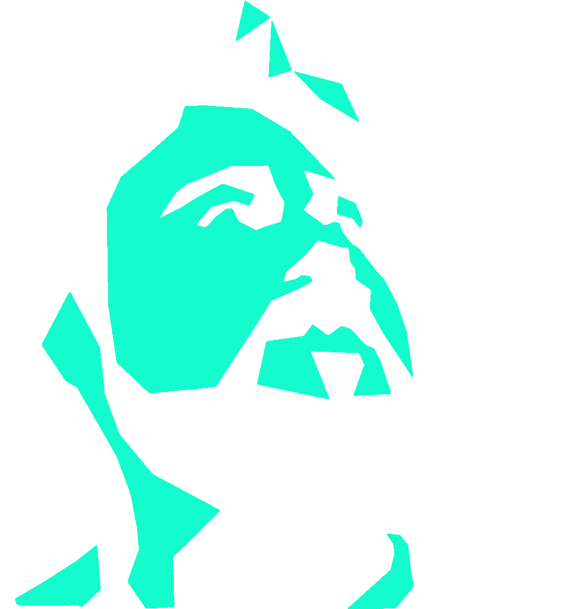
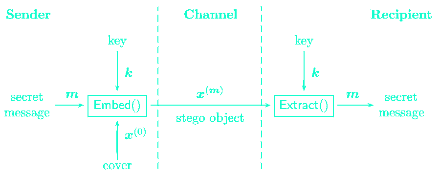
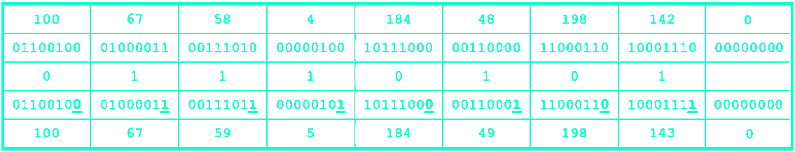
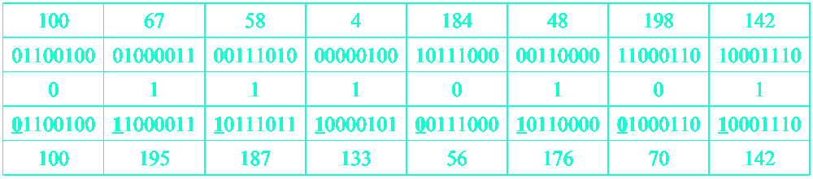
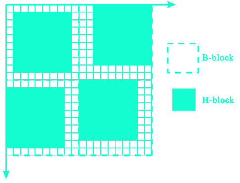
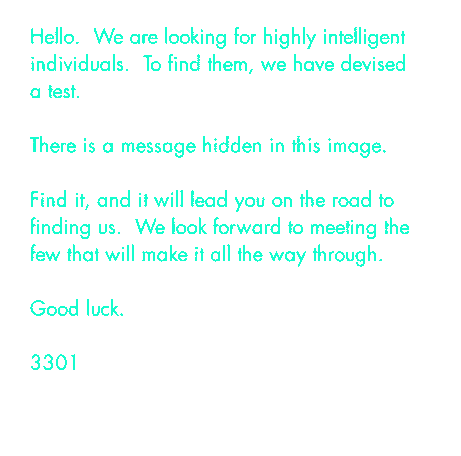

d888888o. 8888888 8888888888 8 8888888888 ,o888888o. .8. b. 8 ,o888888o. ,o888888o. 8 888888888o. .8. 8 888888888o 8 8888 8 `8.`8888. ,8'
.`8888:' `88. 8 8888 8 8888 8888 `88. .888. 888o. 8 . 8888 `88. 8888 `88. 8 8888 `88. .888. 8 8888 `88. 8 8888 8 `8.`8888. ,8'
8.`8888. Y8 8 8888 8 8888 ,8 8888 `8. :88888. Y88888o. 8 ,8 8888 `8b ,8 8888 `8. 8 8888 `88 :88888. 8 8888 `88 8 8888 8 `8.`8888. ,8'
`8.`8888. 8 8888 8 8888 88 8888 . `88888. .`Y888888o. 8 88 8888 `8b 88 8888 8 8888 ,88 . `88888. 8 8888 ,88 8 8888 8 `8.`8888.,8'
`8.`8888. 8 8888 8 888888888888 88 8888 .8. `88888. 8o. `Y888888o. 8 88 8888 88 88 8888 8 8888. ,88' .8. `88888. 8 8888. ,88' 8 8888 8 `8.`88888'
`8.`8888. 8 8888 8 8888 88 8888 .8`8. `88888. 8`Y8o. `Y88888o8 88 8888 88 88 8888 8 888888888P' .8`8. `88888. 8 888888888P' 8 8888 8 `8. 8888
`8.`8888. 8 8888 8 8888 88 8888 8888888 .8' `8. `88888. 8 `Y8o. `Y8888 88 8888 ,8P 88 8888 8888888 8 8888`8b .8' `8. `88888. 8 8888 8 8888888888888 `8 8888
8b `8.`8888. 8 8888 8 8888 `8 8888 .8'.8' `8. `88888. 8 `Y8o. `Y8 `8 8888 ,8P `8 8888 .8' 8 8888 `8b. .8' `8. `88888. 8 8888 8 8888 8 8 8888
`8b. ;8.`8888 8 8888 8 8888 8888 ,88'.888888888. `88888. 8 `Y8o.` ` 8888 ,88' 8888 ,88' 8 8888 `8b. .888888888. `88888. 8 8888 8 8888 8 8 8888
`Y8888P ,88P' 8 8888 8 888888888888 `8888888P' .8' `8. `88888. 8 `Yo `8888888P' `8888888P' 8 8888 `88. .8' `8. `88888. 8 8888 8 8888 8 8 8888
A quick review based on the article [1] A survey on image steganography and steganalysis. Journal of Information Hiding and Multimedia Signal Processing, 2(2), 2011. By Jiwu Huang, Yun Qing Shi, Bin Li, Junhui He.
best at 1200x900px
Definition
As seen in [1]:
Steganography and steganalysis are important topics in information hiding.
Steganography refers to the technology of hiding data into digital media without drawing
any suspicion, while steganalysis is the art of detecting the presence of steganography.
And on Wikipedia:
Steganography is the practice of concealing a file, message, image, or video within another file, message, image, or video.
The word steganography combines the Greek words steganos, meaning "covered, concealed, or protected," and graphein meaning "writing".
CRYPTOGRAPHY
Steganography focuses on the concealment of the fact that the message is beign sent as well as concealing its content.
Considering the example below, which would be more likely to be ignored in a monitored medium, the cipher text or the image?
Message:
HELLO WORLD
Ciphertext:
AYE4jnEpKaYsuDE=
Hidden text:

Modeling
Steganography can be modeled as the prisioner's problem. Two steganographers communicating covertly over a public channel take the hole of the prisoners as agent(s) monitor the channel.

Evaluating
What makes steganography good?
SECURITY
How easily the existence of steganography can be estimated
CAPACITY
How much information can be stored in a message
IMPERCEPTIBILITY
How much perceptible distortion or noise was generated
Stego Objects
Steganography can be applied to any medium.
PHYSICAL
- written text
- hairstyles
- clothing
- body movements
- ...
DIGITAL
- digital text
- media encoding
- mimic functions
- content manipulation
- ...
OTHERS
- puzzles
- naming of things
- networks
- intentional mistakes
- ...
There is a lot of research and interest in digital images. That's where we will be focusing on.
IMAGE STEGANOGRAPHY: LSB
One of the most well known methods of digital steganography, the LSB (least significant bit) method consists of using the last bit of each color channel of an image to store information.
It's easy to understand and implement, can be used with any image format and has high capacity, but is also easy to detect and the chances of failure are high.

IMAGE STEGANOGRAPHY: MASKING AND FILTERING
Similar to the LSB method, but not so susceptible to failure due to the fact that image manipulations does not affect the hidden message.
As can be noted, this technique will only work on black and white pictures.

IMAGE STEGANOGRAPHY: DOMAIN TRANSFORM
Such methods use domain manipulation to hide messages with high capacity, security and robustness.
The discrete cosine transform, for example, works by allowing us to reduce redudancy in the transformed domain of the image. This allows us to store our message without changing the most important aspects of the original image.
IMAGE STEGANOGRAPHY: MUCH MORE
We covered the basics of digital image staganography. Both steganography and steganalysis compete in an everlasting race with modern techniques, software and ongoing research.
LSB, BPCS, Stochastic Modulation, PVD, MBNS, QIM/DM, Jsteg, F5, OG, MB and YASS are all some of the steganographic methods developed and studied for steganography in JPEG images.
The image demonstrates random partioning of the image used by YASS(Yet Another Steganographic Scheme - that resists blind steganalysis) to promove imperceptibility.

FUN: THE MISTERY OF CICADA 3301

- posted on an image board in 2012, it quickly got viral
- examination of the image led to a series of very specific puzzles that had to be solved for advancing in the mistery
- steganography and cryptography were broadly used
- it ended suggesting that the organizers found the candidates they were looking for
- similar challenges happened in the years that followed
- the cicada 3301 remains as a very popular use of steganography on the web
8888888 8888888888 8 8888 8 .8. b. 8 8 8888 ,88' d888888o.
8 8888 8 8888 8 .888. 888o. 8 8 8888 ,88' .`8888:' `88.
8 8888 8 8888 8 :88888. Y88888o. 8 8 8888 ,88' 8.`8888. Y8
8 8888 8 8888 8 . `88888. .`Y888888o. 8 8 8888 ,88' `8.`8888.
8 8888 8 8888 8 .8. `88888. 8o. `Y888888o. 8 8 8888 ,88' `8.`8888.
8 8888 8 8888 8 .8`8. `88888. 8`Y8o. `Y88888o8 8 8888 88' `8.`8888.
8 8888 8 8888888888888 .8' `8. `88888. 8 `Y8o. `Y8888 8 888888< `8.`8888.
8 8888 8 8888 8 .8' `8. `88888. 8 `Y8o. `Y8 8 8888 `Y8. 8b `8.`8888.
8 8888 8 8888 8 .888888888. `88888. 8 `Y8o.` 8 8888 `Y8. `8b. ;8.`8888
8 8888 8 8888 8 .8' `8. `88888. 8 `Yo 8 8888 `Y8. `Y8888P ,88P'
Awesome! You made it to the end. Here are some links for you:
can you find the hidden message in this presentation?